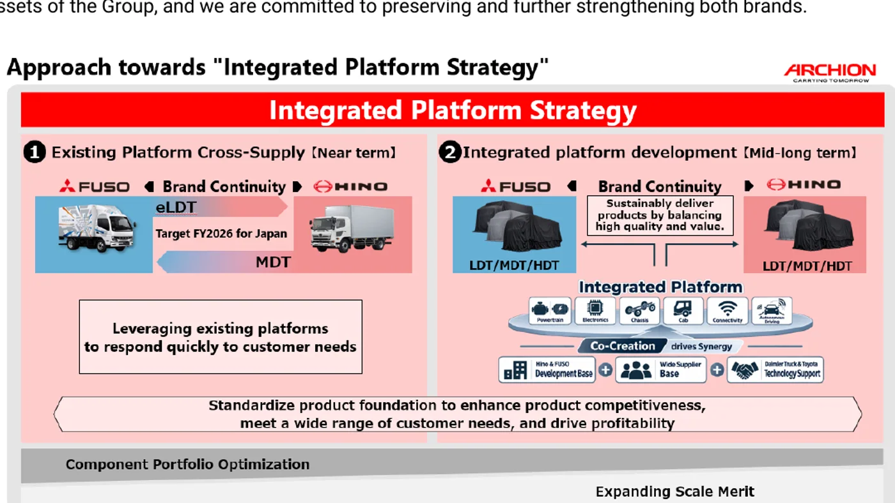

ARCHION Corporation anunció el 26 de agosto el lanzamiento de los nuevos Hino Ranger y Mitsubishi Fuso Fighter para el mercado japonés. Es el primer paso visible de su estrategia de plataforma integrada, después de que Hino Motors y Mitsubishi Fuso comenzaran a operar bajo la misma compañía controlante el 1 de abril de 2026.
Los dos vehículos conservan marcas, parrillas y propuestas comerciales separadas, pero parten de una base técnica existente de Hino. En esta primera etapa, Hino suministra la plataforma del mediano a Mitsubishi Fuso. El objetivo declarado es ampliar rápidamente la oferta y responder a configuraciones que cada fabricante, por separado, tardaría más en desarrollar.
Qué significa compartir una plataforma
Una plataforma no es solamente el bastidor. ARCHION plantea estandarizar progresivamente trenes motrices, chasis, cabinas y arquitectura electrónica. También busca ordenar especificaciones de componentes, producción y desarrollo para ganar escala.
En el corto plazo se utilizarán bases que ya existen. Más adelante, los equipos de ambas compañías desarrollarán una nueva generación común, apoyados por proveedores y por la experiencia tecnológica de Daimler Truck y Toyota. Es una integración de ingeniería más profunda que el simple cambio de emblema.
La ventaja potencial es distribuir el costo de desarrollo entre más unidades. Un mismo módulo puede probarse, fabricarse y abastecerse en mayor volumen. Eso puede acelerar mejoras de seguridad, conectividad y emisiones, aunque la calidad final dependerá de cómo se adapten las variantes a cada uso.
Las marcas no desaparecen
ARCHION remarcó que Hino y FUSO seguirán siendo activos independientes frente al cliente. La continuidad de marca importa porque cada red tiene relaciones, servicios y reputación construidos durante décadas. Compartir una base no obliga a que equipamiento, calibración, garantía o atención sean idénticos.
Para el comprador, esto exige mirar más allá de la apariencia. Dos camiones emparentados pueden tener diferentes relaciones de transmisión, software, paquetes de seguridad o carrocerías homologadas. La ficha técnica y el número de chasis siguen siendo la referencia correcta.

El siguiente paso será eléctrico
El acuerdo no termina en los medianos diésel. Mitsubishi Fuso suministrará su plataforma eléctrica liviana a Hino, con producción prevista dentro del ejercicio fiscal actual. De este modo, el intercambio funciona en ambas direcciones: Hino aporta el mediano y FUSO una base eléctrica ya desarrollada.
Este enfoque puede reducir el tiempo necesario para ampliar una gama cero emisiones. También concentra desafíos: baterías, software, herramientas de diagnóstico y capacitación deberán sostenerse durante muchos años y en redes que originalmente trabajaban con productos diferentes.
Qué cambia para repuestos y talleres
- Identificación: una plataforma común no garantiza que todos los repuestos sean intercambiables.
- Números de pieza: pueden converger algunos componentes y mantenerse referencias propias en otros.
- Diagnóstico: la arquitectura electrónica compartida exigirá software y procedimientos actualizados.
- Carrocerías: los puntos de montaje comunes pueden simplificar desarrollos, pero cada homologación conserva límites.
- Capacitación: las redes deberán conocer similitudes y diferencias para evitar sustituciones incorrectas.
- Disponibilidad: una mayor escala puede mejorar abastecimiento, aunque la transición inicial requiere atención.
El efecto sobre el mercado mundial
La industria de camiones necesita invertir al mismo tiempo en motores más limpios, baterías, hidrógeno, asistencia a la conducción y conectividad. Desarrollar cada tecnología por duplicado resulta costoso. Las plataformas comunes permiten concentrar recursos sin necesariamente fusionar todas las marcas.
El riesgo es una oferta demasiado homogénea. ARCHION afirma que utilizará la colaboración para cubrir más necesidades, no menos. El resultado podrá evaluarse cuando aparezcan variantes, precios, intervalos de mantenimiento y experiencias de flota.
Qué significa para Argentina
El lanzamiento anunciado corresponde a Japón y no confirma llegada local. Hino y FUSO tienen presencia internacional, por lo que la estrategia puede influir con el tiempo en productos, repuestos y capacitación de otros mercados. Las configuraciones regionales, sin embargo, no deben suponerse a partir del modelo japonés.
Para talleres argentinos, la señal más importante es que la identificación por marca será cada vez menos suficiente. El mismo componente puede aparecer en varias familias, mientras que piezas visualmente iguales pueden requerir calibraciones distintas. VIN, modelo, año y código técnico ganan relevancia.
Qué debería observar una flota
Cuando estos productos acumulen kilómetros, será importante comparar consumo, disponibilidad y costo de mantenimiento entre las dos versiones. También convendrá revisar qué piezas son realmente comunes, cuáles conservan calibración propia y cómo responde cada red ante una reparación inmovilizante.
La plataforma compartida puede mejorar la oferta de repuestos por volumen, pero una transición industrial también genera cambios de referencia. Guardar historial de números reemplazados, campañas y versiones de software evitará confundir compatibilidad física con compatibilidad funcional.
Una integración que recién comienza
Ranger y Fighter son la primera prueba comercial de ARCHION. La compañía busca demostrar que puede compartir una base, conservar dos identidades y acelerar la renovación del producto. Luego vendrán la plataforma eléctrica y una arquitectura de nueva generación.
La promesa es mayor escala con más opciones. Para el cliente, la medida real seguirá siendo conocida: disponibilidad, costo por kilómetro, facilidad para carrozar y respaldo durante toda la vida útil.